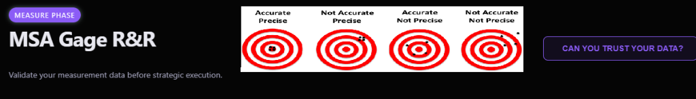

Measure
Phase
| DATA VALIDATION
TOOL
MSA Gage R&R
Audit your measurement system to ensure accurate, repeatable, and reproducible data. ℹ️ What is MSA?

1. Study Setup
2. Report & Export
STUDY
COMPLETION
0%
Progress tracks data entry completion and quality verification.